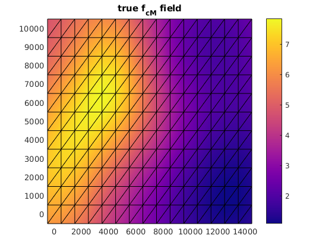
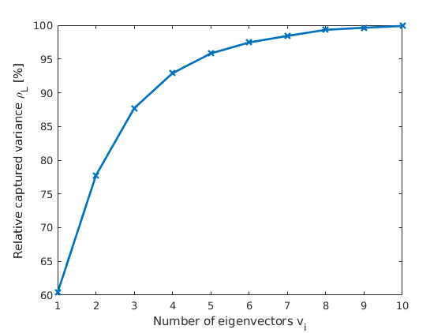

Example 13 -- field update by the MMSE using low-rank representation of the measurement model
This is an example on how to update the inhomogenous scaling factor using the Minimium Mean Square Estimator
Contents
- 1) Write measurement parameter , error model and the response in a PCE form.
- 2) Generate a combined PCE basis
- 3) Rewrite PCE coefficients in the modified basis
- 4) Determine the approximating basis for
- 5a) and 6a) Get integration points and weights
- 5b) and 6b) Compute the elements of A and b
- 7) Solve the system of equations
- 8) Generate samples of the scaling factor
- Map samples to the scaling factor
- Compute statistics
- Plot true field, mean field, std of the field and error of posterior mean
- Plot the prior and the posterior mean and quantiles
1) Write measurement parameter , error model and the response in a PCE form.
method = 'MMSE_p1_RField'; % We use the PCE of the projected error and response model computed in % Example 10. Example_12_low_rank_approx_of_the_measurement_model_RField; % number of the measurements (now the projected one) n_y_r = R; % The PCE of the input parameter [q_i_alpha_1, V_q] = Q.gpc_expand;
Warning: Not enough positive eigenvalues in KL eigenvalue problem reducing from
20 to 14
ans =
0.9989
L =
Columns 1 through 7
0.0802 0 0 0 0 0 0
-0.0203 0.1930 0 0 0 0 0
-0.1323 -0.0828 0.3784 0 0 0 0
-0.3266 -0.0891 -0.0577 0.4877 0 0 0
0.0415 -0.0696 -0.3239 -0.1362 0.9503 0 0
0.1280 -1.0613 -0.0815 -0.7762 -0.0180 1.1355 0
1.1554 0.0829 0.0269 -0.2462 0.1389 -0.0978 3.2867
0.3135 0.2479 -1.6371 -0.3026 -0.6911 -0.5405 -0.9191
1.7624 -2.0044 0.0397 0.4095 -1.9470 0.3696 3.9677
0.7567 -2.2147 -0.6766 -2.6906 6.0829 0.3830 2.8798
Columns 8 through 10
0 0 0
0 0 0
0 0 0
0 0 0
0 0 0
0 0 0
0 0 0
2.3806 0 0
-2.4088 7.4963 0
3.0189 -0.9505 5.8682
  2) Generate a combined PCE basis
% First we bring the $Q$s to the PCE basis of $Y_h$ [V_qy, Pr_V_q, Pr_V_y] = ... gpcbasis_combine(V_q, V_y, 'inner_sum', 'as_operators', true); % Unified basis [V_z, Pr_V_qy, Pr_V_e] = ... gpcbasis_combine(V_y, V_e_r, 'outer_sum', 'as_operators', true);
3) Rewrite PCE coefficients in the modified basis
% The PCE coefficients of the inpute parameter with the unified basis q_i_alpha=q_i_alpha_1*Pr_V_q; q_i_gamma = q_i_alpha*Pr_V_qy; % The PCE coefficients of the projected response $Y'$ upsilon_k_alpha = upsilon_r_k_alpha* Pr_V_y; upsilon_k_gamma = upsilon_k_alpha*Pr_V_qy; % The PCE coefficients of the projected measurement errror e_k_gamma = e_r_k_beta*Pr_V_e; % The PCE coefficients of the measurement model z_k_gamma = upsilon_k_gamma + e_k_gamma;
4) Determine the approximating basis for
p_phi = 2; % This is not really a GPCE basis, but the function system comes handy % System character corresponding to the monomials syschar = 'M'; V_phi=gpcbasis_create(syschar, 'm', n_y_r, 'p', p_phi);
5a) and 6a) Get integration points and weights
Polynomials degree of the PCE of Q
p_q = gpcbasis_info(V_q, 'total_degree'); % Polynomial degree of the PCE of Y p_gpc= gpcbasis_info(V_y, 'total_degree'); % Itengration order needed for integrating elements of A and b p_int=max(p_gpc*p_phi+1,ceil((p_q+p_phi*p_gpc+1)/2)); % The integration points to compute matrix $\vec A$ and vector $\vec b$ [zeta_k_j, w_j] = gpc_integrate([], V_z, p_int, 'grid', 'smolyak');
5b) and 6b) Compute the elements of A and b
Evaluate Q and Z at the integration points
q_i_j = gpc_evaluate(q_i_gamma, V_z, zeta_k_j); z_j_k = gpc_evaluate(z_k_gamma, V_z, zeta_k_j); % Evaluate \phi of z at integration points Psi_delta_k = gpcbasis_evaluate(V_phi, z_j_k); % Compute matrix A wPsi_delta_k = binfun(@times, Psi_delta_k, w_j'); A = Psi_delta_k * wPsi_delta_k'; % Evaluate matrix b b = q_i_j * wPsi_delta_k';
7) Solve the system of equations
The coefficients of the estimator
phi_i_delta = (A\b')';
8) Generate samples of the scaling factor
% Sample from the unified germ zeta_j = [xi, eta] zeta_j = gpcgerm_sample(V_z, N); % Compute prior parameter at the samples q_j = gpc_evaluate(q_i_gamma, V_z, zeta_j); % Compute measurement model at the samples z_j = gpc_evaluate(z_k_gamma, V_z, zeta_j); % Mapped measurement model phi_of_z_j = gpc_evaluate(phi_i_delta, V_phi, z_j); % Compute the best estimate of q q_m = gpc_evaluate(phi_i_delta, V_phi, z_r_m); % sample from the posterior qp_j= q_j - phi_of_z_j + q_m;
Map samples to the scaling factor
f_cm_j = map.q2f(qp_j);
Compute statistics
mean of the posterior
f_cm_mean = mean(f_cm_j ,2);
% variance of the density
f_cm_var = var(f_cm_j , [],2);
Plot true field, mean field, std of the field and error of posterior mean
[h_f, h_fields] = plot_true_mean_var_and_error(pos, els, ... f_cm_true, f_cm_mean, f_cm_var, ind_y, z_m); save_png(h_f, ['true_mean_std_err', method], 'figdir', 'figs', 'res', 600)
ans =
2×4 Axes array:
Axes Axes Axes Axes
Axes Axes Axes Axes
Plot the prior and the posterior mean and quantiles
h_quant= plot_prior_and_posterior_mean_and_quantiles(f_cm_j, pos, els, mu, sig); save_png(h_quant, ['field_prior_mean_and_quant', method], 'figdir', 'figs', 'res', 600)